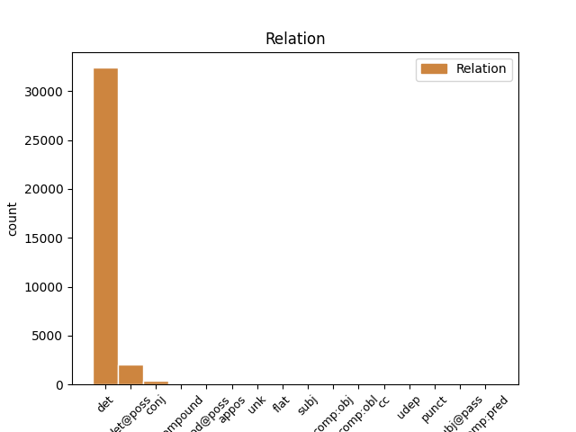
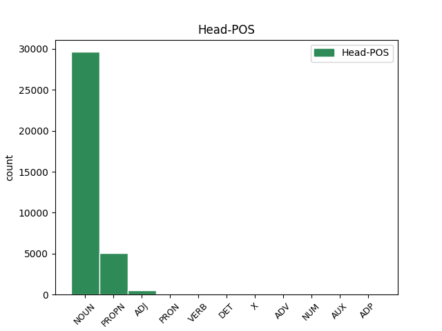
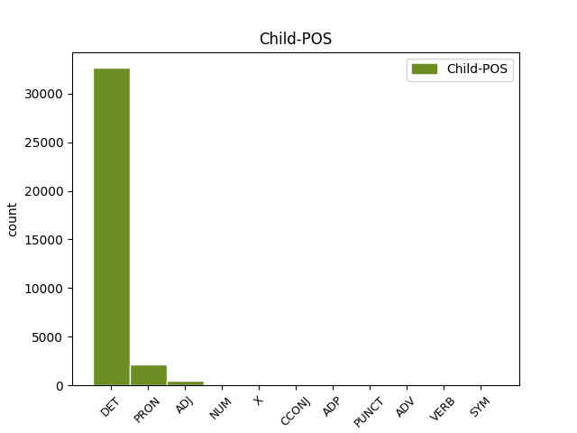

Distribution of features within this leaf



Agreement Rules sorted by frequency.
- When the dependent token is the determiner(det) of the head token, and the dependent token is DET.
1 Schon _ _ _ _ 0 _ _ _
2 früh _ _ _ _ 0 _ _ _
3 entwickelte _ _ _ _ 0 _ _ _
4 er _ _ _ _ 0 _ _ _
5 eine _ _ _ _ 0 _ _ _
6 Zuneigung _ _ _ _ 0 _ _ _
7 zu _ _ _ _ 0 _ _ _
8 den _ _ _ _ 0 _ _ _
9 Meteora _ _ _ _ 0 _ _ _
10 - _ _ _ _ 0 _ _ _
11 Klöstern _ _ _ _ 0 _ _ _
12 , _ _ _ _ 0 _ _ _
13 von _ _ _ _ 0 _ _ _
14 denen _ _ _ _ 0 _ _ _
15 einige _ _ _ _ 0 _ _ _
16 unter _ _ _ _ 0 _ _ _
17 der der DET ART Case=Dat|Definite=Def|Gender=Fem|Number=Sing|PronType=Art 18 det _ _
18 Herrschaft Herrschaft NOUN NN Case=Dat|Gender=Fem|Number=Sing 0 _ _ _
19 seines _ _ _ _ 0 _ _ _
20 Vaters _ _ _ _ 0 _ _ _
21 entstanden _ _ _ _ 0 _ _ _
22 und _ _ _ _ 0 _ _ _
23 die _ _ _ _ 0 _ _ _
24 auch _ _ _ _ 0 _ _ _
25 er _ _ _ _ 0 _ _ _
26 finanziell _ _ _ _ 0 _ _ _
27 unterstützte _ _ _ _ 0 _ _ _
28 . _ _ _ _ 0 _ _ _
1 Schon _ _ _ _ 0 _ _ _
2 früh _ _ _ _ 0 _ _ _
3 entwickelte _ _ _ _ 0 _ _ _
4 er _ _ _ _ 0 _ _ _
5 eine _ _ _ _ 0 _ _ _
6 Zuneigung _ _ _ _ 0 _ _ _
7 zu _ _ _ _ 0 _ _ _
8 den _ _ _ _ 0 _ _ _
9 Meteora _ _ _ _ 0 _ _ _
10 - _ _ _ _ 0 _ _ _
11 Klöstern _ _ _ _ 0 _ _ _
12 , _ _ _ _ 0 _ _ _
13 von _ _ _ _ 0 _ _ _
14 denen _ _ _ _ 0 _ _ _
15 einige _ _ _ _ 0 _ _ _
16 unter _ _ _ _ 0 _ _ _
17 der _ _ _ _ 0 _ _ _
18 Herrschaft _ _ _ _ 0 _ _ _
19 seines sein DET PPOSAT Case=Gen|Gender=Masc|Number=Sing|Poss=Yes 20 det@poss _ _
20 Vaters Vater NOUN NN Case=Gen|Gender=Masc|Number=Sing 0 _ _ _
21 entstanden _ _ _ _ 0 _ _ _
22 und _ _ _ _ 0 _ _ _
23 die _ _ _ _ 0 _ _ _
24 auch _ _ _ _ 0 _ _ _
25 er _ _ _ _ 0 _ _ _
26 finanziell _ _ _ _ 0 _ _ _
27 unterstützte _ _ _ _ 0 _ _ _
28 . _ _ _ _ 0 _ _ _
1 Doch _ _ _ _ 0 _ _ _
2 kann _ _ _ _ 0 _ _ _
3 man _ _ _ _ 0 _ _ _
4 alle _ _ _ _ 0 _ _ _
5 diese dies PRON PDAT Case=Acc|Gender=Fem|Number=Plur|PronType=Dem 6 det _ _
6 Formen Form NOUN NN Case=Acc|Gender=Fem|Number=Plur 0 _ _ _
7 auf _ _ _ _ 0 _ _ _
8 das _ _ _ _ 0 _ _ _
9 Wort _ _ _ _ 0 _ _ _
10 dyaus _ _ _ _ 0 _ _ _
11 zurückführen _ _ _ _ 0 _ _ _
12 , _ _ _ _ 0 _ _ _
13 das _ _ _ _ 0 _ _ _
14 als _ _ _ _ 0 _ _ _
15 " _ _ _ _ 0 _ _ _
16 Erscheinung _ _ _ _ 0 _ _ _
17 " _ _ _ _ 0 _ _ _
18 oder _ _ _ _ 0 _ _ _
19 " _ _ _ _ 0 _ _ _
20 Strahlung _ _ _ _ 0 _ _ _
21 " _ _ _ _ 0 _ _ _
22 aufgefasst _ _ _ _ 0 _ _ _
23 werden _ _ _ _ 0 _ _ _
24 kann _ _ _ _ 0 _ _ _
25 . _ _ _ _ 0 _ _ _
1 Dies _ _ _ _ 0 _ _ _
2 geschieht _ _ _ _ 0 _ _ _
3 in _ _ _ _ 0 _ _ _
4 einem _ _ _ _ 0 _ _ _
5 erweiterten erweitert ADJ ADJA Case=Dat|Gender=Masc|Number=Sing 0 _ _ _
6 , _ _ _ _ 0 _ _ _
7 zwischen _ _ _ _ 0 _ _ _
8 Sonatensatzform _ _ _ _ 0 _ _ _
9 und _ _ _ _ 0 _ _ _
10 Rondoform _ _ _ _ 0 _ _ _
11 stehenden stehend ADJ ADJA Case=Dat|Gender=Fem|Number=Sing 5 conj _ _
12 groß _ _ _ _ 0 _ _ _
13 angelegten _ _ _ _ 0 _ _ _
14 Satz _ _ _ _ 0 _ _ _
15 . _ _ _ _ 0 _ _ _
1 Seine sein PRON PPOSAT Case=Nom|Gender=Masc|Number=Plur|Poss=Yes 2 det@poss _ _
2 Pläne Plan NOUN NN Case=Nom|Gender=Masc|Number=Plur 0 _ _ _
3 wurden _ _ _ _ 0 _ _ _
4 jedoch _ _ _ _ 0 _ _ _
5 von _ _ _ _ 0 _ _ _
6 Anwälten _ _ _ _ 0 _ _ _
7 durchkreuzt _ _ _ _ 0 _ _ _
8 , _ _ _ _ 0 _ _ _
9 die _ _ _ _ 0 _ _ _
10 herausfanden _ _ _ _ 0 _ _ _
11 , _ _ _ _ 0 _ _ _
12 dass _ _ _ _ 0 _ _ _
13 es _ _ _ _ 0 _ _ _
14 rechtlich _ _ _ _ 0 _ _ _
15 nicht _ _ _ _ 0 _ _ _
16 möglich _ _ _ _ 0 _ _ _
17 war _ _ _ _ 0 _ _ _
18 , _ _ _ _ 0 _ _ _
19 den _ _ _ _ 0 _ _ _
20 Vertrag _ _ _ _ 0 _ _ _
21 mit _ _ _ _ 0 _ _ _
22 dem _ _ _ _ 0 _ _ _
23 Kingdome _ _ _ _ 0 _ _ _
24 , _ _ _ _ 0 _ _ _
25 der _ _ _ _ 0 _ _ _
26 bis _ _ _ _ 0 _ _ _
27 in _ _ _ _ 0 _ _ _
28 das _ _ _ _ 0 _ _ _
29 Jahr _ _ _ _ 0 _ _ _
30 2005 _ _ _ _ 0 _ _ _
31 reichte _ _ _ _ 0 _ _ _
32 , _ _ _ _ 0 _ _ _
33 aufzulösen _ _ _ _ 0 _ _ _
34 . _ _ _ _ 0 _ _ _
1 Davidsson _ _ _ _ 0 _ _ _
2 promovierte _ _ _ _ 0 _ _ _
3 1991 _ _ _ _ 0 _ _ _
4 mit _ _ _ _ 0 _ _ _
5 einer _ _ _ _ 0 _ _ _
6 Arbeit _ _ _ _ 0 _ _ _
7 über _ _ _ _ 0 _ _ _
8 Matthias _ _ _ _ 0 _ _ _
9 Weckmann _ _ _ _ 0 _ _ _
10 und _ _ _ _ 0 _ _ _
11 war _ _ _ _ 0 _ _ _
12 dadurch _ _ _ _ 0 _ _ _
13 der _ _ _ _ 0 _ _ _
14 erste _ _ _ _ 0 _ _ _
15 Absolvent _ _ _ _ 0 _ _ _
16 eines _ _ _ _ 0 _ _ _
17 wissenschaftlich wissenschaftlich ADJ ADJA Case=Gen|Gender=Masc|Number=Sing 19 compound _ _
18 - _ _ _ _ 0 _ _ _
19 künstlerischen künstlerisch ADJ ADJA Case=Gen|Gender=Neut|Number=Sing 0 _ _ _
20 Studiums _ _ _ _ 0 _ _ _
21 in _ _ _ _ 0 _ _ _
22 Schweden _ _ _ _ 0 _ _ _
23 . _ _ _ _ 0 _ _ _
1 Die _ _ _ _ 0 _ _ _
2 Studie _ _ _ _ 0 _ _ _
3 bestätigte _ _ _ _ 0 _ _ _
4 die _ _ _ _ 0 _ _ _
5 Ergebnisse _ _ _ _ 0 _ _ _
6 der _ _ _ _ 0 _ _ _
7 US US PROPN ADJA Case=Gen|Gender=Fem|Number=Sing 0 _ _ _
8 - _ _ _ _ 0 _ _ _
9 amerikanischen amerikanisch ADJ ADJA Case=Gen|Gender=Fem|Number=Sing 7 flat _ _
10 Frauengesundheitsinitiative _ _ _ _ 0 _ _ _
11 ( _ _ _ _ 0 _ _ _
12 Women _ _ _ _ 0 _ _ _
13 's _ _ _ _ 0 _ _ _
14 Health _ _ _ _ 0 _ _ _
15 Initiative _ _ _ _ 0 _ _ _
16 ; _ _ _ _ 0 _ _ _
1 Die der DET PDS Case=Nom|Definite=Def|Gender=Fem|Number=Sing|PronType=Art 5 unk _ _
2 ein _ _ _ _ 0 _ _ _
3 schmaler _ _ _ _ 0 _ _ _
4 flacher _ _ _ _ 0 _ _ _
5 Graben Graben NOUN NN Case=Nom|Gender=Masc|Number=Sing 0 _ _ _
6 , _ _ _ _ 0 _ _ _
7 ein _ _ _ _ 0 _ _ _
8 kleiner _ _ _ _ 0 _ _ _
9 Wall _ _ _ _ 0 _ _ _
10 und _ _ _ _ 0 _ _ _
11 ein _ _ _ _ 0 _ _ _
12 tieferer _ _ _ _ 0 _ _ _
13 breiter _ _ _ _ 0 _ _ _
14 Graben _ _ _ _ 0 _ _ _
15 laufen _ _ _ _ 0 _ _ _
16 bogenförmig _ _ _ _ 0 _ _ _
17 der _ _ _ _ 0 _ _ _
18 Spornspitze _ _ _ _ 0 _ _ _
19 zu _ _ _ _ 0 _ _ _
20 . _ _ _ _ 0 _ _ _
1 Es _ _ _ _ 0 _ _ _
2 gibt _ _ _ _ 0 _ _ _
3 wenige wenig DET PIS Case=Acc|Definite=Ind|Number=Plur|PronType=Ind 0 _ _ _
4 oder _ _ _ _ 0 _ _ _
5 keine kein PRON PIAT Case=Acc|Definite=Ind|Gender=Masc|Number=Plur|Polarity=Neg|PronType=Neg 3 conj _ _
6 Raphenäste _ _ _ _ 0 _ _ _
7 . _ _ _ _ 0 _ _ _
1 John John PROPN NE Case=Nom|Gender=Masc|Number=Sing 0 _ _ _
2 Campbell _ _ _ _ 0 _ _ _
3 , _ _ _ _ 0 _ _ _
4 einer ein PRON PIS Case=Nom|Definite=Ind|Gender=Masc|Number=Sing|PronType=Ind 1 appos _ _
5 seiner _ _ _ _ 0 _ _ _
6 Studenten _ _ _ _ 0 _ _ _
7 , _ _ _ _ 0 _ _ _
8 brachte _ _ _ _ 0 _ _ _
9 später _ _ _ _ 0 _ _ _
10 einige _ _ _ _ 0 _ _ _
11 von _ _ _ _ 0 _ _ _
12 Zimmers _ _ _ _ 0 _ _ _
13 unveröffentlichten _ _ _ _ 0 _ _ _
14 Texten _ _ _ _ 0 _ _ _
15 heraus _ _ _ _ 0 _ _ _
16 , _ _ _ _ 0 _ _ _
17 die _ _ _ _ 0 _ _ _
18 zu _ _ _ _ 0 _ _ _
19 dem _ _ _ _ 0 _ _ _
20 Teil _ _ _ _ 0 _ _ _
21 in _ _ _ _ 0 _ _ _
22 englischer _ _ _ _ 0 _ _ _
23 Sprache _ _ _ _ 0 _ _ _
24 geschrieben _ _ _ _ 0 _ _ _
25 waren _ _ _ _ 0 _ _ _
26 . _ _ _ _ 0 _ _ _
1 Der _ _ _ _ 0 _ _ _
2 Stil _ _ _ _ 0 _ _ _
3 der _ _ _ _ 0 _ _ _
4 Band _ _ _ _ 0 _ _ _
5 nennt _ _ _ _ 0 _ _ _
6 sich er|es|sie PRON PRF Case=Acc|Number=Sing|Person=3|PronType=Prs|Reflex=Yes 8 subj _ _
7 " _ _ _ _ 0 _ _ _
8 Skunkrock Skunkrock PROPN NN Case=Acc|Gender=Masc|Number=Sing 0 _ _ _
9 " _ _ _ _ 0 _ _ _
10 , _ _ _ _ 0 _ _ _
11 eine _ _ _ _ 0 _ _ _
12 Wortkombination _ _ _ _ 0 _ _ _
13 aus _ _ _ _ 0 _ _ _
14 " _ _ _ _ 0 _ _ _
15 SKa _ _ _ _ 0 _ _ _
16 " _ _ _ _ 0 _ _ _
17 und _ _ _ _ 0 _ _ _
18 " _ _ _ _ 0 _ _ _
19 pUNK _ _ _ _ 0 _ _ _
20 " _ _ _ _ 0 _ _ _
21 . _ _ _ _ 0 _ _ _
1 Bei _ _ _ _ 0 _ _ _
2 dem _ _ _ _ 0 _ _ _
3 1:1 1:1 NUM NN Case=Dat|Gender=Neut|Number=Sing|NumType=Card 5 compound _ _
4 - _ _ _ _ 0 _ _ _
5 Unentschieden Unentschieden NOUN NN Case=Dat|Gender=Neut|Number=Sing 0 _ _ _
6 gegen _ _ _ _ 0 _ _ _
7 eine _ _ _ _ 0 _ _ _
8 südafrikanische _ _ _ _ 0 _ _ _
9 Auswahl _ _ _ _ 0 _ _ _
10 debütierte _ _ _ _ 0 _ _ _
11 er _ _ _ _ 0 _ _ _
12 an _ _ _ _ 0 _ _ _
13 dem _ _ _ _ 0 _ _ _
14 22 _ _ _ _ 0 _ _ _
15 . _ _ _ _ 0 _ _ _
1 In _ _ _ _ 0 _ _ _
2 dieser _ _ _ _ 0 _ _ _
3 Zeit _ _ _ _ 0 _ _ _
4 war _ _ _ _ 0 _ _ _
5 Campbell _ _ _ _ 0 _ _ _
6 nicht _ _ _ _ 0 _ _ _
7 nur _ _ _ _ 0 _ _ _
8 wichtiger _ _ _ _ 0 _ _ _
9 Teil _ _ _ _ 0 _ _ _
10 von _ _ _ _ 0 _ _ _
11 Dylans _ _ _ _ 0 _ _ _
12 Live _ _ _ _ 0 _ _ _
13 - _ _ _ _ 0 _ _ _
14 Band _ _ _ _ 0 _ _ _
15 , _ _ _ _ 0 _ _ _
16 sondern _ _ _ _ 0 _ _ _
17 auch _ _ _ _ 0 _ _ _
18 Musiker _ _ _ _ 0 _ _ _
19 auf _ _ _ _ 0 _ _ _
20 dem _ _ _ _ 0 _ _ _
21 Studioalbum _ _ _ _ 0 _ _ _
22 " _ _ _ _ 0 _ _ _
23 Love _ _ _ _ 0 _ _ _
24 and _ _ _ _ 0 _ _ _
25 Theft _ _ _ _ 0 _ _ _
26 " _ _ _ _ 0 _ _ _
27 aus _ _ _ _ 0 _ _ _
28 dem _ _ _ _ 0 _ _ _
29 Jahr _ _ _ _ 0 _ _ _
30 2001 _ _ _ _ 0 _ _ _
31 und _ _ _ _ 0 _ _ _
32 dem _ _ _ _ 0 _ _ _
33 Dylan _ _ _ _ 0 _ _ _
34 - _ _ _ _ 0 _ _ _
35 Film _ _ _ _ 0 _ _ _
36 Masked _ _ _ _ 0 _ _ _
37 and and CCONJ NE Case=Dat|Gender=Masc|Number=Sing 38 cc _ _
38 Anonymous Anonymous PROPN NE Case=Dat|Gender=Masc|Number=Sing 0 _ _ _
39 aus _ _ _ _ 0 _ _ _
40 dem _ _ _ _ 0 _ _ _
41 Jahr _ _ _ _ 0 _ _ _
42 2003 _ _ _ _ 0 _ _ _
43 . _ _ _ _ 0 _ _ _
1 Internationale international ADJ ADJA Case=Nom|Gender=Masc|Number=Plur 2 unk _ FixTigerDep=Yes
2 Wahlbeobachter Wahlbeobachter NOUN NN Case=Nom|Gender=Masc|Number=Plur 0 _ _ _
3 hatten _ _ _ _ 0 _ _ _
4 nur _ _ _ _ 0 _ _ _
5 unbedeutende _ _ _ _ 0 _ _ _
6 Unregelmäßigkeiten _ _ _ _ 0 _ _ _
7 bemerkt _ _ _ _ 0 _ _ _
8 . _ _ _ _ 0 _ _ _
1 Der _ _ _ _ 0 _ _ _
2 Bühler _ _ _ _ 0 _ _ _
3 Oberlehrer _ _ _ _ 0 _ _ _
4 Otto Otto PROPN NE Case=Nom|Gender=Masc|Number=Sing 0 _ _ _
5 Greule _ _ _ _ 0 _ _ _
6 ( _ _ _ _ 0 _ _ _
7 † † X NE Case=Nom|Gender=Neut|Number=Sing 4 appos _ _
8 1970 _ _ _ _ 0 _ _ _
9 ) _ _ _ _ 0 _ _ _
10 verhalf _ _ _ _ 0 _ _ _
11 der _ _ _ _ 0 _ _ _
12 damals _ _ _ _ 0 _ _ _
13 größten _ _ _ _ 0 _ _ _
14 katholischen _ _ _ _ 0 _ _ _
15 Kirchenorgel _ _ _ _ 0 _ _ _
16 Badens _ _ _ _ 0 _ _ _
17 insbesondere _ _ _ _ 0 _ _ _
18 durch _ _ _ _ 0 _ _ _
19 sein _ _ _ _ 0 _ _ _
20 konzertantes _ _ _ _ 0 _ _ _
21 Spiel _ _ _ _ 0 _ _ _
22 zu _ _ _ _ 0 _ _ _
23 überregionaler _ _ _ _ 0 _ _ _
24 Berühmtheit _ _ _ _ 0 _ _ _
25 . _ _ _ _ 0 _ _ _
1 Otto _ _ _ _ 0 _ _ _
2 Bang _ _ _ _ 0 _ _ _
3 - _ _ _ _ 0 _ _ _
4 Haas _ _ _ _ 0 _ _ _
5 war _ _ _ _ 0 _ _ _
6 der _ _ _ _ 0 _ _ _
7 Sohn _ _ _ _ 0 _ _ _
8 des _ _ _ _ 0 _ _ _
9 dänischen _ _ _ _ 0 _ _ _
10 Kleinschmetterlingssammlers _ _ _ _ 0 _ _ _
11 und _ _ _ _ 0 _ _ _
12 späteren _ _ _ _ 0 _ _ _
13 Insektenhändlers _ _ _ _ 0 _ _ _
14 Andreas Andreas PROPN NE Case=Gen|Gender=Masc|Number=Sing 0 _ _ _
15 Bang _ _ _ _ 0 _ _ _
16 - _ _ _ _ 0 _ _ _
17 Haas _ _ _ _ 0 _ _ _
18 ( _ _ _ _ 0 _ _ _
19 1846-1925 1846-1925 NUM NN Case=Gen|Gender=Neut|Number=Sing|NumType=Card 14 appos _ SpaceAfter=No
20 ) _ _ _ _ 0 _ _ _
21 . _ _ _ _ 0 _ _ _
1 Entgegen _ _ _ _ 0 _ _ _
2 dem _ _ _ _ 0 _ _ _
3 weit _ _ _ _ 0 _ _ _
4 verbreiteten _ _ _ _ 0 _ _ _
5 salischen salischen ADJ ADJA Case=Dat|Gender=Neut|Number=Sing 0 _ _ _
6 ( _ _ _ _ 0 _ _ _
7 maskulinen maskulin ADJ ADJA Case=Dat|Gender=Neut|Number=Sing 5 appos _ SpaceAfter=No
8 ) _ _ _ _ 0 _ _ _
9 Erbfolgerecht _ _ _ _ 0 _ _ _
10 verfügte _ _ _ _ 0 _ _ _
11 er _ _ _ _ 0 _ _ _
12 , _ _ _ _ 0 _ _ _
13 dass _ _ _ _ 0 _ _ _
14 , _ _ _ _ 0 _ _ _
15 sofern _ _ _ _ 0 _ _ _
16 keine _ _ _ _ 0 _ _ _
17 männlichen _ _ _ _ 0 _ _ _
18 Erben _ _ _ _ 0 _ _ _
19 existieren _ _ _ _ 0 _ _ _
20 , _ _ _ _ 0 _ _ _
21 die _ _ _ _ 0 _ _ _
22 älteste _ _ _ _ 0 _ _ _
23 Tochter _ _ _ _ 0 _ _ _
24 zu _ _ _ _ 0 _ _ _
25 der _ _ _ _ 0 _ _ _
26 Alleinerbin _ _ _ _ 0 _ _ _
27 und _ _ _ _ 0 _ _ _
28 Regentin _ _ _ _ 0 _ _ _
29 bestimmt _ _ _ _ 0 _ _ _
30 werden _ _ _ _ 0 _ _ _
31 soll _ _ _ _ 0 _ _ _
32 . _ _ _ _ 0 _ _ _
1 Der _ _ _ _ 0 _ _ _
2 Begriff _ _ _ _ 0 _ _ _
3 tunga tunga X NE Case=Nom|Number=Sing 5 compound _ _
4 - _ _ _ _ 0 _ _ _
5 tunga tunga X NE Case=Nom|Number=Sing 0 _ _ _
6 spielt _ _ _ _ 0 _ _ _
7 dabei _ _ _ _ 0 _ _ _
8 auf _ _ _ _ 0 _ _ _
9 den _ _ _ _ 0 _ _ _
10 Klang _ _ _ _ 0 _ _ _
11 dieses _ _ _ _ 0 _ _ _
12 Patterns _ _ _ _ 0 _ _ _
13 an _ _ _ _ 0 _ _ _
14 . _ _ _ _ 0 _ _ _
1 Es _ _ _ _ 0 _ _ _
2 handelt _ _ _ _ 0 _ _ _
3 sich er|es|sie PRON PRF Case=Acc|Number=Sing|Person=3|PronType=Prs|Reflex=Yes 7 comp:obj _ _
4 um _ _ _ _ 0 _ _ _
5 fünf _ _ _ _ 0 _ _ _
6 nationale _ _ _ _ 0 _ _ _
7 Botschaftskanzleien Botschaftskanzlei NOUN NN Case=Acc|Gender=Fem|Number=Plur 0 _ _ _
8 mit _ _ _ _ 0 _ _ _
9 einem _ _ _ _ 0 _ _ _
10 gemeinsamen _ _ _ _ 0 _ _ _
11 , _ _ _ _ 0 _ _ _
12 öffentlichen _ _ _ _ 0 _ _ _
13 Gebäude _ _ _ _ 0 _ _ _
14 , _ _ _ _ 0 _ _ _
15 verbunden _ _ _ _ 0 _ _ _
16 durch _ _ _ _ 0 _ _ _
17 ein _ _ _ _ 0 _ _ _
18 umlaufendes _ _ _ _ 0 _ _ _
19 Kupferband _ _ _ _ 0 _ _ _
20 . _ _ _ _ 0 _ _ _
1 Besondere _ _ _ _ 0 _ _ _
2 Berücksichtigung _ _ _ _ 0 _ _ _
3 fanden _ _ _ _ 0 _ _ _
4 die _ _ _ _ 0 _ _ _
5 Arbeiterbewegung _ _ _ _ 0 _ _ _
6 , _ _ _ _ 0 _ _ _
7 die _ _ _ _ 0 _ _ _
8 Geschlechtergeschichte _ _ _ _ 0 _ _ _
9 sowie _ _ _ _ 0 _ _ _
10 die _ _ _ _ 0 _ _ _
11 Wohnungspolitik Wohnungspolitik NOUN NN Case=Acc|Gender=Fem|Number=Sing 0 _ _ _
12 inkl inkl X NE Case=Acc|Gender=Fem|Number=Sing 11 unk _ SpaceAfter=No
13 . _ _ _ _ 0 _ _ _
1 Anschließend _ _ _ _ 0 _ _ _
2 vervollständigte _ _ _ _ 0 _ _ _
3 er _ _ _ _ 0 _ _ _
4 sein _ _ _ _ 0 _ _ _
5 Studium _ _ _ _ 0 _ _ _
6 der _ _ _ _ 0 _ _ _
7 Soziologie _ _ _ _ 0 _ _ _
8 an _ _ _ _ 0 _ _ _
9 der _ _ _ _ 0 _ _ _
10 Universität _ _ _ _ 0 _ _ _
11 Tübingen _ _ _ _ 0 _ _ _
12 und _ _ _ _ 0 _ _ _
13 als _ _ _ _ 0 _ _ _
14 Fulbright _ _ _ _ 0 _ _ _
15 - _ _ _ _ 0 _ _ _
16 Stipendiat _ _ _ _ 0 _ _ _
17 an _ _ _ _ 0 _ _ _
18 der _ _ _ _ 0 _ _ _
19 University _ _ _ _ 0 _ _ _
20 of _ _ _ _ 0 _ _ _
21 California _ _ _ _ 0 _ _ _
22 , _ _ _ _ 0 _ _ _
23 Berkeley _ _ _ _ 0 _ _ _
24 mit _ _ _ _ 0 _ _ _
25 dem _ _ _ _ 0 _ _ _
26 Abschluss _ _ _ _ 0 _ _ _
27 eines _ _ _ _ 0 _ _ _
28 Master Master NOUN NE Case=Gen|Gender=Masc|Number=Sing 0 _ _ _
29 of of ADP NE Case=Gen|Gender=Masc|Number=Sing 28 udep _ _
30 Arts _ _ _ _ 0 _ _ _
31 in _ _ _ _ 0 _ _ _
32 dem _ _ _ _ 0 _ _ _
33 Jahre _ _ _ _ 0 _ _ _
34 1964 _ _ _ _ 0 _ _ _
35 . _ _ _ _ 0 _ _ _
1 Die der DET ART Case=Nom|Definite=Def|Gender=Masc|Number=Plur|PronType=Art 7 subj _ _
2 relativ _ _ _ _ 0 _ _ _
3 kleinen _ _ _ _ 0 _ _ _
4 bis _ _ _ _ 0 _ _ _
5 recht _ _ _ _ 0 _ _ _
6 großen _ _ _ _ 0 _ _ _
7 Kronen Krone NOUN NN Case=Nom|Gender=Fem|Number=Plur 0 _ _ _
8 sind _ _ _ _ 0 _ _ _
9 meist _ _ _ _ 0 _ _ _
10 radiärsymmetrisch _ _ _ _ 0 _ _ _
11 , _ _ _ _ 0 _ _ _
12 können _ _ _ _ 0 _ _ _
13 aber _ _ _ _ 0 _ _ _
14 auch _ _ _ _ 0 _ _ _
15 selten _ _ _ _ 0 _ _ _
16 leicht _ _ _ _ 0 _ _ _
17 zygomorph _ _ _ _ 0 _ _ _
18 sein _ _ _ _ 0 _ _ _
19 . _ _ _ _ 0 _ _ _
1 Diese _ _ _ _ 0 _ _ _
2 interdisziplinär _ _ _ _ 0 _ _ _
3 breit _ _ _ _ 0 _ _ _
4 vernetzte _ _ _ _ 0 _ _ _
5 hermeneutische _ _ _ _ 0 _ _ _
6 Spirale _ _ _ _ 0 _ _ _
7 ( _ _ _ _ 0 _ _ _
8 Theologie _ _ _ _ 0 _ _ _
9 → _ _ _ _ 0 _ _ _
10 Exegese _ _ _ _ 0 _ _ _
11 → → PUNCT NE Case=Nom|Gender=Fem|Number=Sing 13 punct _ _
12 exegetische _ _ _ _ 0 _ _ _
13 Theologie Theologie NOUN NN Case=Nom|Gender=Fem|Number=Sing 0 _ _ _
14 ) _ _ _ _ 0 _ _ _
15 lässt _ _ _ _ 0 _ _ _
16 neue _ _ _ _ 0 _ _ _
17 Erkenntnisse _ _ _ _ 0 _ _ _
18 aus _ _ _ _ 0 _ _ _
19 der _ _ _ _ 0 _ _ _
20 Heiligen _ _ _ _ 0 _ _ _
21 Schrift _ _ _ _ 0 _ _ _
22 wachsen _ _ _ _ 0 _ _ _
23 , _ _ _ _ 0 _ _ _
24 welche _ _ _ _ 0 _ _ _
25 die _ _ _ _ 0 _ _ _
26 postscriptuelle _ _ _ _ 0 _ _ _
27 Schriftwerdung _ _ _ _ 0 _ _ _
28 bereichern _ _ _ _ 0 _ _ _
29 . _ _ _ _ 0 _ _ _
1 Diese _ _ _ _ 0 _ _ _
2 lautet _ _ _ _ 0 _ _ _
3 : _ _ _ _ 0 _ _ _
4 Nicht _ _ _ _ 0 _ _ _
5 die _ _ _ _ 0 _ _ _
6 unterschiedliche _ _ _ _ 0 _ _ _
7 leibliche _ _ _ _ 0 _ _ _
8 oder _ _ _ _ 0 _ _ _
9 organisatorische _ _ _ _ 0 _ _ _
10 Herkunft _ _ _ _ 0 _ _ _
11 von _ _ _ _ 0 _ _ _
12 Juden _ _ _ _ 0 _ _ _
13 und _ _ _ _ 0 _ _ _
14 Christen _ _ _ _ 0 _ _ _
15 , _ _ _ _ 0 _ _ _
16 sondern _ _ _ _ 0 _ _ _
17 die _ _ _ _ 0 _ _ _
18 verbindende _ _ _ _ 0 _ _ _
19 geistige _ _ _ _ 0 _ _ _
20 Verfassung _ _ _ _ 0 _ _ _
21 ist _ _ _ _ 0 _ _ _
22 Voraussetzung _ _ _ _ 0 _ _ _
23 für _ _ _ _ 0 _ _ _
24 das _ _ _ _ 0 _ _ _
25 beiden beide PRON PIAT Case=Acc|Definite=Ind|Gender=Neut|Number=Sing|PronType=Ind 26 comp:obl _ _
26 gemeinsame gemeinsam ADJ ADJA Case=Acc|Gender=Neut|Number=Sing 0 _ _ _
27 rechte _ _ _ _ 0 _ _ _
28 Verhältnis _ _ _ _ 0 _ _ _
29 zu _ _ _ _ 0 _ _ _
30 Gott _ _ _ _ 0 _ _ _
31 . _ _ _ _ 0 _ _ _
1 Sie _ _ _ _ 0 _ _ _
2 sammelt _ _ _ _ 0 _ _ _
3 alle _ _ _ _ 0 _ _ _
4 Werke Werk NOUN NN Case=Nom|Gender=Neut|Number=Plur 0 _ _ _
5 , _ _ _ _ 0 _ _ _
6 die der PRON PRELS Case=Nom|Number=Plur|PronType=Rel 4 unk _ _
7 von _ _ _ _ 0 _ _ _
8 der _ _ _ _ 0 _ _ _
9 ehemaligen _ _ _ _ 0 _ _ _
10 Jesuitenschule _ _ _ _ 0 _ _ _
11 von _ _ _ _ 0 _ _ _
12 Pruntrut _ _ _ _ 0 _ _ _
13 und _ _ _ _ 0 _ _ _
14 ihren _ _ _ _ 0 _ _ _
15 Nachfolgeinstitutionen _ _ _ _ 0 _ _ _
16 ( _ _ _ _ 0 _ _ _
17 bis _ _ _ _ 0 _ _ _
18 Mitte _ _ _ _ 0 _ _ _
19 des _ _ _ _ 0 _ _ _
20 20 _ _ _ _ 0 _ _ _
21 . _ _ _ _ 0 _ _ _
1 In _ _ _ _ 0 _ _ _
2 den _ _ _ _ 0 _ _ _
3 folgenden _ _ _ _ 0 _ _ _
4 Romanen _ _ _ _ 0 _ _ _
5 nimmt _ _ _ _ 0 _ _ _
6 Askildsen _ _ _ _ 0 _ _ _
7 zumeist _ _ _ _ 0 _ _ _
8 " _ _ _ _ 0 _ _ _
9 die _ _ _ _ 0 _ _ _
10 Perspektive _ _ _ _ 0 _ _ _
11 eines _ _ _ _ 0 _ _ _
12 Ich ich PRON NN Case=Gen|Gender=Masc|Number=Sing 14 compound _ _
13 - _ _ _ _ 0 _ _ _
14 Erzählers Erzähler NOUN NN Case=Gen|Gender=Masc|Number=Sing 0 _ _ _
15 ein _ _ _ _ 0 _ _ _
16 , _ _ _ _ 0 _ _ _
17 der _ _ _ _ 0 _ _ _
18 in _ _ _ _ 0 _ _ _
19 einem _ _ _ _ 0 _ _ _
20 existenzialistisch _ _ _ _ 0 _ _ _
21 angehauchten _ _ _ _ 0 _ _ _
22 Monolog _ _ _ _ 0 _ _ _
23 -- _ _ _ _ 0 _ _ _
24 ganz _ _ _ _ 0 _ _ _
25 in _ _ _ _ 0 _ _ _
26 der _ _ _ _ 0 _ _ _
27 Tradition _ _ _ _ 0 _ _ _
28 von _ _ _ _ 0 _ _ _
29 Albert _ _ _ _ 0 _ _ _
30 Camus _ _ _ _ 0 _ _ _
31 ' _ _ _ _ 0 _ _ _
32 Der _ _ _ _ 0 _ _ _
33 Fremde _ _ _ _ 0 _ _ _
34 oder _ _ _ _ 0 _ _ _
35 Jean _ _ _ _ 0 _ _ _
36 - _ _ _ _ 0 _ _ _
37 Paul _ _ _ _ 0 _ _ _
38 Sartres _ _ _ _ 0 _ _ _
39 Der _ _ _ _ 0 _ _ _
40 Ekel _ _ _ _ 0 _ _ _
41 -- _ _ _ _ 0 _ _ _
42 lakonisch _ _ _ _ 0 _ _ _
43 seinen _ _ _ _ 0 _ _ _
44 Alltag _ _ _ _ 0 _ _ _
45 Revue _ _ _ _ 0 _ _ _
46 passieren _ _ _ _ 0 _ _ _
47 lässt _ _ _ _ 0 _ _ _
48 . _ _ _ _ 0 _ _ _
49 " _ _ _ _ 0 _ _ _
1 Die _ _ _ _ 0 _ _ _
2 Siedlung _ _ _ _ 0 _ _ _
3 liegt _ _ _ _ 0 _ _ _
4 rechtsseitig _ _ _ _ 0 _ _ _
5 des _ _ _ _ 0 _ _ _
6 namensgebenden _ _ _ _ 0 _ _ _
7 Flusses _ _ _ _ 0 _ _ _
8 Pinega _ _ _ _ 0 _ _ _
9 , _ _ _ _ 0 _ _ _
10 rund _ _ _ _ 0 _ _ _
11 110 _ _ _ _ 0 _ _ _
12 km _ _ _ _ 0 _ _ _
13 oberhalb _ _ _ _ 0 _ _ _
14 deren der DET PDAT Case=Gen|Gender=Fem|Number=Sing|PronType=Dem 15 mod@poss _ _
15 Mündung Mündung NOUN NN Case=Gen|Gender=Fem|Number=Sing 0 _ _ _
16 in _ _ _ _ 0 _ _ _
17 den _ _ _ _ 0 _ _ _
18 Unterlauf _ _ _ _ 0 _ _ _
19 der _ _ _ _ 0 _ _ _
20 Nördlichen _ _ _ _ 0 _ _ _
21 Dwina _ _ _ _ 0 _ _ _
22 . _ _ _ _ 0 _ _ _
1 Seine Seine ADJ ADJA Case=Nom|Gender=Fem|Number=Sing 3 mod@poss _ _
2 ältere _ _ _ _ 0 _ _ _
3 Schwester Schwester NOUN NN Case=Nom|Gender=Fem|Number=Sing 0 _ _ _
4 Eniola _ _ _ _ 0 _ _ _
5 ist _ _ _ _ 0 _ _ _
6 englische _ _ _ _ 0 _ _ _
7 Fußballnationalspielerin _ _ _ _ 0 _ _ _
8 . _ _ _ _ 0 _ _ _
1 Das _ _ _ _ 0 _ _ _
2 Pro Pro ADP NN Case=Nom|Gender=Neut|Number=Sing 6 compound _ _
3 - _ _ _ _ 0 _ _ _
4 Kopf _ _ _ _ 0 _ _ _
5 - _ _ _ _ 0 _ _ _
6 Einkommen Einkommen NOUN NN Case=Nom|Gender=Neut|Number=Sing 0 _ _ _
7 betrug _ _ _ _ 0 _ _ _
8 23.998 _ _ _ _ 0 _ _ _
9 USD _ _ _ _ 0 _ _ _
10 . _ _ _ _ 0 _ _ _
1 An _ _ _ _ 0 _ _ _
2 dem _ _ _ _ 0 _ _ _
3 Dienstag _ _ _ _ 0 _ _ _
4 abend _ _ _ _ 0 _ _ _
5 waren _ _ _ _ 0 _ _ _
6 erneute _ _ _ _ 0 _ _ _
7 Gespräche _ _ _ _ 0 _ _ _
8 zwischen _ _ _ _ 0 _ _ _
9 Haushaltsexperten _ _ _ _ 0 _ _ _
10 des _ _ _ _ 0 _ _ _
11 Weißen _ _ _ _ 0 _ _ _
12 Hauses Haus PROPN NN Case=Gen|Gender=Neut|Number=Sing 0 _ _ _
13 und _ _ _ _ 0 _ _ _
14 des der DET ART Case=Gen|Definite=Def|Gender=Masc|Number=Sing|PronType=Art 12 conj _ _
15 von _ _ _ _ 0 _ _ _
16 den _ _ _ _ 0 _ _ _
17 Republikanern _ _ _ _ 0 _ _ _
18 beherrschten _ _ _ _ 0 _ _ _
19 Kongresses _ _ _ _ 0 _ _ _
20 ergebnislos _ _ _ _ 0 _ _ _
21 abgebrochen _ _ _ _ 0 _ _ _
22 worden _ _ _ _ 0 _ _ _
23 . _ _ _ _ 0 _ _ _
1 Es _ _ _ _ 0 _ _ _
2 kristallisiert _ _ _ _ 0 _ _ _
3 in _ _ _ _ 0 _ _ _
4 dem _ _ _ _ 0 _ _ _
5 orthorhombischen _ _ _ _ 0 _ _ _
6 Kristallsystem _ _ _ _ 0 _ _ _
7 mit _ _ _ _ 0 _ _ _
8 der _ _ _ _ 0 _ _ _
9 idealisierten _ _ _ _ 0 _ _ _
10 Zusammensetzung _ _ _ _ 0 _ _ _
11 ( _ _ _ _ 0 _ _ _
12 Ni Ni X NE Case=Dat|Number=Sing 0 _ _ _
13 , _ _ _ _ 0 _ _ _
14 Fe Fe X NE Case=Dat|Number=Sing 12 conj _ SpaceAfter=No
15 ) _ _ _ _ 0 _ _ _
16 9S8 _ _ _ _ 0 _ _ _
17 ( _ _ _ _ 0 _ _ _
18 genauer _ _ _ _ 0 _ _ _
19 ( _ _ _ _ 0 _ _ _
20 Ni8 _ _ _ _ 0 _ _ _
21 , _ _ _ _ 0 _ _ _
22 7Fe0 _ _ _ _ 0 _ _ _
23 , _ _ _ _ 0 _ _ _
24 3 _ _ _ _ 0 _ _ _
25 ) _ _ _ _ 0 _ _ _
26 S8 _ _ _ _ 0 _ _ _
27 ) _ _ _ _ 0 _ _ _
28 , _ _ _ _ 0 _ _ _
29 ist _ _ _ _ 0 _ _ _
30 also _ _ _ _ 0 _ _ _
31 chemisch _ _ _ _ 0 _ _ _
32 gesehen _ _ _ _ 0 _ _ _
33 ein _ _ _ _ 0 _ _ _
34 Nickel _ _ _ _ 0 _ _ _
35 - _ _ _ _ 0 _ _ _
36 Eisen _ _ _ _ 0 _ _ _
37 - _ _ _ _ 0 _ _ _
38 Sulfid _ _ _ _ 0 _ _ _
39 . _ _ _ _ 0 _ _ _
1 Oktober _ _ _ _ 0 _ _ _
2 1914 _ _ _ _ 0 _ _ _
3 versammelte _ _ _ _ 0 _ _ _
4 der _ _ _ _ 0 _ _ _
5 neue _ _ _ _ 0 _ _ _
6 osmanische _ _ _ _ 0 _ _ _
7 Flottenchef _ _ _ _ 0 _ _ _
8 , _ _ _ _ 0 _ _ _
9 Vizeadmiral _ _ _ _ 0 _ _ _
10 Wilhelm _ _ _ _ 0 _ _ _
11 Souchon _ _ _ _ 0 _ _ _
12 , _ _ _ _ 0 _ _ _
13 den _ _ _ _ 0 _ _ _
14 Schlachtkreuzer _ _ _ _ 0 _ _ _
15 Yavuz _ _ _ _ 0 _ _ _
16 Sultan _ _ _ _ 0 _ _ _
17 Selim _ _ _ _ 0 _ _ _
18 , _ _ _ _ 0 _ _ _
19 die _ _ _ _ 0 _ _ _
20 Kreuzer _ _ _ _ 0 _ _ _
21 Midilli _ _ _ _ 0 _ _ _
22 und _ _ _ _ 0 _ _ _
23 Hamidiye _ _ _ _ 0 _ _ _
24 , _ _ _ _ 0 _ _ _
25 die _ _ _ _ 0 _ _ _
26 Torpedokanonenboote _ _ _ _ 0 _ _ _
27 Berk Berk PROPN NE Case=Nom|Number=Plur 0 _ _ _
28 - _ _ _ _ 0 _ _ _
29 i i PRON NE Case=Nom|Number=Sing|Person=1|PronType=Prs 27 flat _ _
30 Satvet _ _ _ _ 0 _ _ _
31 und _ _ _ _ 0 _ _ _
32 Peyk _ _ _ _ 0 _ _ _
33 - _ _ _ _ 0 _ _ _
34 i _ _ _ _ 0 _ _ _
35 Şevket _ _ _ _ 0 _ _ _
36 , _ _ _ _ 0 _ _ _
37 die _ _ _ _ 0 _ _ _
38 Zerstörer _ _ _ _ 0 _ _ _
39 Gayret _ _ _ _ 0 _ _ _
40 - _ _ _ _ 0 _ _ _
41 i _ _ _ _ 0 _ _ _
42 Vataniye _ _ _ _ 0 _ _ _
43 , _ _ _ _ 0 _ _ _
44 Muavenet _ _ _ _ 0 _ _ _
45 - _ _ _ _ 0 _ _ _
46 i _ _ _ _ 0 _ _ _
47 Milliye _ _ _ _ 0 _ _ _
48 , _ _ _ _ 0 _ _ _
49 Taşoz _ _ _ _ 0 _ _ _
50 und _ _ _ _ 0 _ _ _
51 Samsun _ _ _ _ 0 _ _ _
52 sowie _ _ _ _ 0 _ _ _
53 die _ _ _ _ 0 _ _ _
54 Minenleger _ _ _ _ 0 _ _ _
55 Nilufer _ _ _ _ 0 _ _ _
56 und _ _ _ _ 0 _ _ _
57 Samsun _ _ _ _ 0 _ _ _
58 bei _ _ _ _ 0 _ _ _
59 Kilyos _ _ _ _ 0 _ _ _
60 , _ _ _ _ 0 _ _ _
61 an _ _ _ _ 0 _ _ _
62 der _ _ _ _ 0 _ _ _
63 Küste _ _ _ _ 0 _ _ _
64 nördlich _ _ _ _ 0 _ _ _
65 von _ _ _ _ 0 _ _ _
66 Istanbul _ _ _ _ 0 _ _ _
67 , _ _ _ _ 0 _ _ _
68 um _ _ _ _ 0 _ _ _
69 die _ _ _ _ 0 _ _ _
70 Offensive _ _ _ _ 0 _ _ _
71 in _ _ _ _ 0 _ _ _
72 dem _ _ _ _ 0 _ _ _
73 Schwarzen _ _ _ _ 0 _ _ _
74 Meer _ _ _ _ 0 _ _ _
75 zu _ _ _ _ 0 _ _ _
76 beginnen _ _ _ _ 0 _ _ _
77 . _ _ _ _ 0 _ _ _
1 Eine _ _ _ _ 0 _ _ _
2 Standard _ _ _ _ 0 _ _ _
3 - _ _ _ _ 0 _ _ _
4 Polymerfaser _ _ _ _ 0 _ _ _
5 ist _ _ _ _ 0 _ _ _
6 1 _ _ _ _ 0 _ _ _
7 mm _ _ _ _ 0 _ _ _
8 dick _ _ _ _ 0 _ _ _
9 und _ _ _ _ 0 _ _ _
10 besteht _ _ _ _ 0 _ _ _
11 aus _ _ _ _ 0 _ _ _
12 einem _ _ _ _ 0 _ _ _
13 0,98 _ _ _ _ 0 _ _ _
14 mm _ _ _ _ 0 _ _ _
15 dicken _ _ _ _ 0 _ _ _
16 Kern _ _ _ _ 0 _ _ _
17 aus _ _ _ _ 0 _ _ _
18 Polymethylmethacrylat Polymethylmethacrylat NOUN NE Case=Dat|Gender=Neut|Number=Sing 0 _ _ _
19 ( _ _ _ _ 0 _ _ _
20 PMMA PMMA ADV NE Case=Dat|Gender=Neut|Number=Sing 18 appos _ SpaceAfter=No
21 ) _ _ _ _ 0 _ _ _
22 sowie _ _ _ _ 0 _ _ _
23 einem _ _ _ _ 0 _ _ _
24 dünnen _ _ _ _ 0 _ _ _
25 Mantel _ _ _ _ 0 _ _ _
26 . _ _ _ _ 0 _ _ _
1 Kurz _ _ _ _ 0 _ _ _
2 nach _ _ _ _ 0 _ _ _
3 dem der DET ART Case=Dat|Definite=Def|Gender=Masc|Number=Sing|PronType=Art 5 comp:obl _ _
4 Ersten _ _ _ _ 0 _ _ _
5 Weltkrieg Weltkrieg PROPN NN Case=Dat|Gender=Masc|Number=Sing 0 _ _ _
6 -- _ _ _ _ 0 _ _ _
7 und _ _ _ _ 0 _ _ _
8 nach _ _ _ _ 0 _ _ _
9 dem _ _ _ _ 0 _ _ _
10 Tod _ _ _ _ 0 _ _ _
11 von _ _ _ _ 0 _ _ _
12 Peter _ _ _ _ 0 _ _ _
13 Altenberg _ _ _ _ 0 _ _ _
14 -- _ _ _ _ 0 _ _ _
15 machten _ _ _ _ 0 _ _ _
16 viele _ _ _ _ 0 _ _ _
17 Wiener _ _ _ _ 0 _ _ _
18 Schriftsteller _ _ _ _ 0 _ _ _
19 , _ _ _ _ 0 _ _ _
20 die _ _ _ _ 0 _ _ _
21 zuvor _ _ _ _ 0 _ _ _
22 das _ _ _ _ 0 _ _ _
23 Café _ _ _ _ 0 _ _ _
24 Central _ _ _ _ 0 _ _ _
25 und _ _ _ _ 0 _ _ _
26 das _ _ _ _ 0 _ _ _
27 Café _ _ _ _ 0 _ _ _
28 Museum _ _ _ _ 0 _ _ _
29 aufgesucht _ _ _ _ 0 _ _ _
30 hatten _ _ _ _ 0 _ _ _
31 , _ _ _ _ 0 _ _ _
32 das _ _ _ _ 0 _ _ _
33 Café _ _ _ _ 0 _ _ _
34 Herrenhof _ _ _ _ 0 _ _ _
35 zu _ _ _ _ 0 _ _ _
36 ihrem _ _ _ _ 0 _ _ _
37 Stammsitz _ _ _ _ 0 _ _ _
38 , _ _ _ _ 0 _ _ _
39 wobei _ _ _ _ 0 _ _ _
40 sie _ _ _ _ 0 _ _ _
41 vor _ _ _ _ 0 _ _ _
42 allem _ _ _ _ 0 _ _ _
43 das _ _ _ _ 0 _ _ _
44 Hinterzimmer _ _ _ _ 0 _ _ _
45 bevorzugten _ _ _ _ 0 _ _ _
46 . _ _ _ _ 0 _ _ _
1 Bei _ _ _ _ 0 _ _ _
2 fortschreitender _ _ _ _ 0 _ _ _
3 Aufladung _ _ _ _ 0 _ _ _
4 sinkt _ _ _ _ 0 _ _ _
5 der _ _ _ _ 0 _ _ _
6 Ladestrom _ _ _ _ 0 _ _ _
7 wegen _ _ _ _ 0 _ _ _
8 der _ _ _ _ 0 _ _ _
9 kleiner klein ADJ ADJD Case=Gen|Gender=Fem|Number=Sing 10 comp:pred _ _
10 werdenden werdend ADJ ADJA Case=Gen|Gender=Fem|Number=Sing 0 _ _ _
11 Spannungsdifferenz _ _ _ _ 0 _ _ _
12 zwischen _ _ _ _ 0 _ _ _
13 Akkumulator _ _ _ _ 0 _ _ _
14 und _ _ _ _ 0 _ _ _
15 Ladegerät _ _ _ _ 0 _ _ _
16 . _ _ _ _ 0 _ _ _
1 [ _ _ _ _ 0 _ _ _
2 ... _ _ _ _ 0 _ _ _
3 ] _ _ _ _ 0 _ _ _
4 Das _ _ _ _ 0 _ _ _
5 dichtest _ _ _ _ 0 _ _ _
6 besiedelte _ _ _ _ 0 _ _ _
7 Deutschland _ _ _ _ 0 _ _ _
8 darf _ _ _ _ 0 _ _ _
9 aus _ _ _ _ 0 _ _ _
10 ökologischen _ _ _ _ 0 _ _ _
11 , _ _ _ _ 0 _ _ _
12 wirtschaftlichen _ _ _ _ 0 _ _ _
13 und _ _ _ _ 0 _ _ _
14 kulturellen _ _ _ _ 0 _ _ _
15 Gründen _ _ _ _ 0 _ _ _
16 kein kein PRON PIAT Case=Nom|Definite=Ind|Gender=Neut|Number=Sing|Polarity=Neg|PronType=Neg 17 udep _ _
17 Einwanderungsland Einwanderungsland ADJ NN Case=Nom|Gender=Neut|Number=Sing 0 _ _ _
18 sein _ _ _ _ 0 _ _ _
19 . _ _ _ _ 0 _ _ _
1 1942 _ _ _ _ 0 _ _ _
2 wurden _ _ _ _ 0 _ _ _
3 sämtliche _ _ _ _ 0 _ _ _
4 Arbeiten _ _ _ _ 0 _ _ _
5 an _ _ _ _ 0 _ _ _
6 der _ _ _ _ 0 _ _ _
7 Mindorf _ _ _ _ 0 _ _ _
8 - _ _ _ _ 0 _ _ _
9 Linie _ _ _ _ 0 _ _ _
10 eingestellt _ _ _ _ 0 _ _ _
11 , _ _ _ _ 0 _ _ _
12 da _ _ _ _ 0 _ _ _
13 Gefangene Gefangene NOUN NN Case=Nom|Number=Plur 0 _ _ _
14 und _ _ _ _ 0 _ _ _
15 Zwangsarbeiter Zwangsarbeiter VERB NN Case=Nom|Gender=Masc|Number=Plur 13 conj _ _
16 nunmehr _ _ _ _ 0 _ _ _
17 in _ _ _ _ 0 _ _ _
18 der _ _ _ _ 0 _ _ _
19 Nürnberger _ _ _ _ 0 _ _ _
20 Industrie _ _ _ _ 0 _ _ _
21 eingesetzt _ _ _ _ 0 _ _ _
22 wurden _ _ _ _ 0 _ _ _
23 . _ _ _ _ 0 _ _ _
1 Weitere _ _ _ _ 0 _ _ _
2 wichtige _ _ _ _ 0 _ _ _
3 Gruppen _ _ _ _ 0 _ _ _
4 waren _ _ _ _ 0 _ _ _
5 die _ _ _ _ 0 _ _ _
6 die _ _ _ _ 0 _ _ _
7 Independent _ _ _ _ 0 _ _ _
8 Communist _ _ _ _ 0 _ _ _
9 Labor _ _ _ _ 0 _ _ _
10 League _ _ _ _ 0 _ _ _
11 ( _ _ _ _ 0 _ _ _
12 ICLL _ _ _ _ 0 _ _ _
13 ) _ _ _ _ 0 _ _ _
14 um _ _ _ _ 0 _ _ _
15 Jay _ _ _ _ 0 _ _ _
16 Lovestone _ _ _ _ 0 _ _ _
17 in _ _ _ _ 0 _ _ _
18 den _ _ _ _ 0 _ _ _
19 USA _ _ _ _ 0 _ _ _
20 und _ _ _ _ 0 _ _ _
21 die _ _ _ _ 0 _ _ _
22 örtlich _ _ _ _ 0 _ _ _
23 starken _ _ _ _ 0 _ _ _
24 , _ _ _ _ 0 _ _ _
25 ebenfalls _ _ _ _ 0 _ _ _
26 KPO KPO PRON NE Case=Dat|Definite=Def|Gender=Fem|Number=Plur|PronType=Art 27 comp:pred _ _
27 genannten genannt ADJ ADJA Case=Dat|Gender=Fem|Number=Plur 0 _ _ _
28 Gruppen _ _ _ _ 0 _ _ _
29 in _ _ _ _ 0 _ _ _
30 Schaffhausen _ _ _ _ 0 _ _ _
31 ( _ _ _ _ 0 _ _ _
32 Schweiz _ _ _ _ 0 _ _ _
33 ) _ _ _ _ 0 _ _ _
34 um _ _ _ _ 0 _ _ _
35 Walther _ _ _ _ 0 _ _ _
36 Bringolf _ _ _ _ 0 _ _ _
37 , _ _ _ _ 0 _ _ _
38 Aš _ _ _ _ 0 _ _ _
39 ( _ _ _ _ 0 _ _ _
40 Tschechoslowakei _ _ _ _ 0 _ _ _
41 ) _ _ _ _ 0 _ _ _
42 und _ _ _ _ 0 _ _ _
43 Straßburg _ _ _ _ 0 _ _ _
44 ( _ _ _ _ 0 _ _ _
45 Frankreich _ _ _ _ 0 _ _ _
46 ) _ _ _ _ 0 _ _ _
47 , _ _ _ _ 0 _ _ _
48 ferner _ _ _ _ 0 _ _ _
49 gehörte _ _ _ _ 0 _ _ _
50 neben _ _ _ _ 0 _ _ _
51 einer _ _ _ _ 0 _ _ _
52 Reihe _ _ _ _ 0 _ _ _
53 kleiner _ _ _ _ 0 _ _ _
54 Zirkel _ _ _ _ 0 _ _ _
55 in _ _ _ _ 0 _ _ _
56 verschiedenen _ _ _ _ 0 _ _ _
57 Ländern _ _ _ _ 0 _ _ _
58 auch _ _ _ _ 0 _ _ _
59 die _ _ _ _ 0 _ _ _
60 Gruppe _ _ _ _ 0 _ _ _
61 um _ _ _ _ 0 _ _ _
62 den _ _ _ _ 0 _ _ _
63 bekannten _ _ _ _ 0 _ _ _
64 indischen _ _ _ _ 0 _ _ _
65 Marxisten _ _ _ _ 0 _ _ _
66 Manabendra _ _ _ _ 0 _ _ _
67 Nath _ _ _ _ 0 _ _ _
68 Roy _ _ _ _ 0 _ _ _
69 zeitweise _ _ _ _ 0 _ _ _
70 zu _ _ _ _ 0 _ _ _
71 der _ _ _ _ 0 _ _ _
72 IVKO _ _ _ _ 0 _ _ _
73 . _ _ _ _ 0 _ _ _
Disagree Examples:
1 Das der DET ART Case=Nom|Definite=Def|Gender=Neut|Number=Sing|PronType=Art 3 det _ _
2 einzig _ _ _ _ 0 _ _ _
3 positive positiv NOUN ADJA Case=Acc|Gender=Masc|Number=Plur 0 _ _ _
4 was _ _ _ _ 0 _ _ _
5 man _ _ _ _ 0 _ _ _
6 sagen _ _ _ _ 0 _ _ _
7 kann _ _ _ _ 0 _ _ _
8 war _ _ _ _ 0 _ _ _
9 das _ _ _ _ 0 _ _ _
10 sie _ _ _ _ 0 _ _ _
11 geschmeckt _ _ _ _ 0 _ _ _
12 hat _ _ _ _ 0 _ _ _
13 , _ _ _ _ 0 _ _ _
14 aber _ _ _ _ 0 _ _ _
15 rein _ _ _ _ 0 _ _ _
16 optisch _ _ _ _ 0 _ _ _
17 hätte _ _ _ _ 0 _ _ _
18 es _ _ _ _ 0 _ _ _
19 meine _ _ _ _ 0 _ _ _
20 kleine _ _ _ _ 0 _ _ _
21 Schwester _ _ _ _ 0 _ _ _
22 wirklich _ _ _ _ 0 _ _ _
23 besser _ _ _ _ 0 _ _ _
24 gemacht _ _ _ _ 0 _ _ _
25 ! _ _ _ _ 0 _ _ _
1 Für _ _ _ _ 0 _ _ _
2 eine ein DET ART Case=Acc|Definite=Ind|Gender=Fem|Number=Sing|PronType=Art 6 det _ _
3 300 _ _ _ _ 0 _ _ _
4 Euro _ _ _ _ 0 _ _ _
5 teuere _ _ _ _ 0 _ _ _
6 Torte Torte NOUN NN Case=Nom|Gender=Masc|Number=Plur 0 _ _ _
7 von _ _ _ _ 0 _ _ _
8 einem _ _ _ _ 0 _ _ _
9 angeblichen _ _ _ _ 0 _ _ _
10 Meisterkonditor _ _ _ _ 0 _ _ _
11 war _ _ _ _ 0 _ _ _
12 das _ _ _ _ 0 _ _ _
13 einfach _ _ _ _ 0 _ _ _
14 nur _ _ _ _ 0 _ _ _
15 furchtbar _ _ _ _ 0 _ _ _
16 -- _ _ _ _ 0 _ _ _
17 die _ _ _ _ 0 _ _ _
18 gelieferte _ _ _ _ 0 _ _ _
19 Torte _ _ _ _ 0 _ _ _
20 hatte _ _ _ _ 0 _ _ _
21 keinerlei _ _ _ _ 0 _ _ _
22 Ähnlichkeit _ _ _ _ 0 _ _ _
23 mit _ _ _ _ 0 _ _ _
24 dem _ _ _ _ 0 _ _ _
25 Bild _ _ _ _ 0 _ _ _
26 der _ _ _ _ 0 _ _ _
27 Torte _ _ _ _ 0 _ _ _
28 die _ _ _ _ 0 _ _ _
29 wir _ _ _ _ 0 _ _ _
30 haben _ _ _ _ 0 _ _ _
31 wollten _ _ _ _ 0 _ _ _
32 ( _ _ _ _ 0 _ _ _
33 welches _ _ _ _ 0 _ _ _
34 wir _ _ _ _ 0 _ _ _
35 ihm _ _ _ _ 0 _ _ _
36 ja _ _ _ _ 0 _ _ _
37 überlassen _ _ _ _ 0 _ _ _
38 hatten _ _ _ _ 0 _ _ _
39 ) _ _ _ _ 0 _ _ _
40 . _ _ _ _ 0 _ _ _
1 Hier _ _ _ _ 0 _ _ _
2 ist _ _ _ _ 0 _ _ _
3 Marketing _ _ _ _ 0 _ _ _
4 eine ein DET ART Case=Nom|Definite=Ind|Gender=Fem|Number=Sing|PronType=Art 5 det _ _
5 Investition Investition NOUN NN Case=Acc|Gender=Fem|Number=Sing 0 _ _ _
6 die _ _ _ _ 0 _ _ _
7 sich _ _ _ _ 0 _ _ _
8 auch _ _ _ _ 0 _ _ _
9 auszahlt _ _ _ _ 0 _ _ _
10 ! _ _ _ _ 0 _ _ _
1 War _ _ _ _ 0 _ _ _
2 jetzt _ _ _ _ 0 _ _ _
3 in _ _ _ _ 0 _ _ _
4 fast _ _ _ _ 0 _ _ _
5 allen _ _ _ _ 0 _ _ _
6 Tabledance _ _ _ _ 0 _ _ _
7 Clubs _ _ _ _ 0 _ _ _
8 in _ _ _ _ 0 _ _ _
9 München _ _ _ _ 0 _ _ _
10 wobei _ _ _ _ 0 _ _ _
11 ich _ _ _ _ 0 _ _ _
12 sagen _ _ _ _ 0 _ _ _
13 muss _ _ _ _ 0 _ _ _
14 , _ _ _ _ 0 _ _ _
15 dass _ _ _ _ 0 _ _ _
16 der _ _ _ _ 0 _ _ _
17 neu _ _ _ _ 0 _ _ _
18 eröffnete _ _ _ _ 0 _ _ _
19 Laden _ _ _ _ 0 _ _ _
20 Blackboxxx _ _ _ _ 0 _ _ _
21 für _ _ _ _ 0 _ _ _
22 Männer _ _ _ _ 0 _ _ _
23 der der DET ART Case=Gen|Definite=Def|Gender=Fem|Number=Sing|PronType=Art 27 det _ _
24 mit _ _ _ _ 0 _ _ _
25 Abstand _ _ _ _ 0 _ _ _
26 beste _ _ _ _ 0 _ _ _
27 Laden Laden NOUN NN Case=Nom|Gender=Masc|Number=Sing 0 _ _ _
28 ist _ _ _ _ 0 _ _ _
29 . _ _ _ _ 0 _ _ _
1 In _ _ _ _ 0 _ _ _
2 dem _ _ _ _ 0 _ _ _
3 April _ _ _ _ 0 _ _ _
4 09 _ _ _ _ 0 _ _ _
5 hat _ _ _ _ 0 _ _ _
6 mir _ _ _ _ 0 _ _ _
7 meine mein PRON PPOSAT Case=Acc|Gender=Fem|Number=Sing|Poss=Yes 8 det@poss _ _
8 Frau Frau NOUN NN Case=Nom|Gender=Fem|Number=Sing 0 _ _ _
9 zu _ _ _ _ 0 _ _ _
10 dem _ _ _ _ 0 _ _ _
11 Geburtstag _ _ _ _ 0 _ _ _
12 ein _ _ _ _ 0 _ _ _
13 Seminar _ _ _ _ 0 _ _ _
14 in _ _ _ _ 0 _ _ _
15 dem _ _ _ _ 0 _ _ _
16 Hotel _ _ _ _ 0 _ _ _
17 Sonnenstrahl _ _ _ _ 0 _ _ _
18 geschenkt _ _ _ _ 0 _ _ _
19 . _ _ _ _ 0 _ _ _